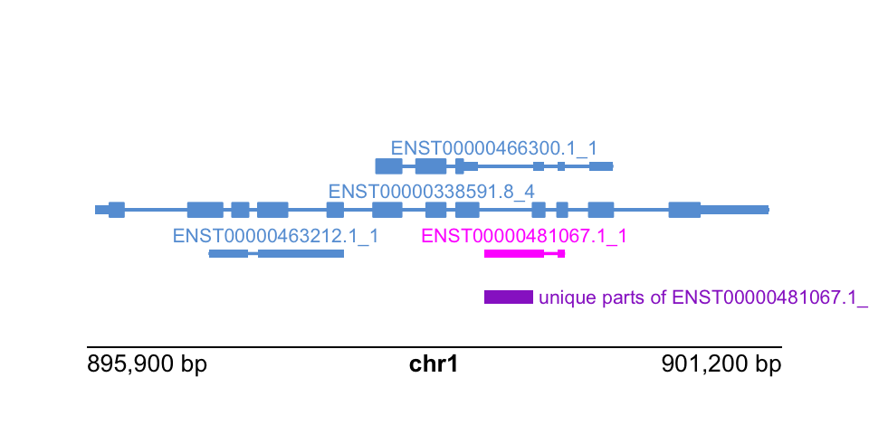

library(TxDb.Hsapiens.UCSC.hg19.knownGene)
txdb <- TxDb.Hsapiens.UCSC.hg19.knownGene
txp <- transcripts(txdb)9 Isoform analysis
Objective: compare the structure of isoforms within a gene using grouping and disjoin operations.
There are many packages in Bioconductor that allow for isoform-level analysis across samples (also called transcript-level analysis). Packages that facilitate differential transcript analysis include DEXSeq and DRIMSeq (demonstrated in the rnaseqDTU workflow), and newer packages satuRn and fishpond.
Once you’ve identified isoforms of interest within a gene, perhaps isoforms that switch in terms of their expression after cells are treated, one can use the IsoformSwitchAnalyzeR Bioconductor package to visualize and analyze a set of isoform switches (Vitting-Seerup and Sandelin 2019). For example, one can test the functional consequences of a set of isoform switches in terms of the gain or loss of protein domains, or splicing-centric changes (e.g. alternative 3’ or 5’ acceptor sites, alternative transcription start or ends sites, etc.) IsoformSwitchAnalyzeR is a multi-feature and mature package for this type of analysis, but we can perform some simpler within-gene isoform comparisons using plyranges, mostly for demonstration.
Here we will suppose that we have somehow identified isoforms of interest, and we want to compare these isoforms to other isoforms of the same gene. For simplicity, we will focus on one isoform per gene, for a particular set of interesting genes, just picking isoforms at random for genes on chr1. We could use plyranges to compare various metadata about isoforms or exons e.g. RNA-seq or ChIP-seq coverage, sequence content, etc. But here we will just compare isoforms alone by the interval definitions. Then to reformulate:
Specific objective 1: compare one isoform per gene to the others, in terms of the extent from TSS to TES. What makes this isoform distinct?
We will start again with the transcript database we’ve used before:
For further operations it will be convenient to have the tx_id be a character variable, and we filter now to a set of genes of interest (here just picking those on chr1):
library(plyranges)
txp <- txp %>%
mutate(tx_id = as.character(tx_id)) %>%
filter(seqnames == "chr1")It is sometimes useful to have other identifiers, such as the gene ID (Entrez)…
txp <- txp %>%
mutate(gene_id = mapIds(
txdb, keys=tx_id,
column="GENEID", keytype="TXID")
) %>%
filter(!is.na(gene_id))…and the gene symbol. For simplicity we will keep genes that have a non-NA symbol but this step is not necessary.
library(org.Hs.eg.db)
txp <- txp %>%
mutate(symbol = mapIds(
org.Hs.eg.db, keys=gene_id,
column="SYMBOL", keytype="ENTREZID")
) %>%
filter(!is.na(symbol))The following is one way to identify which isoforms belong to multi-isoform genes:
# this is slow for some reason...
## txp %>%
## group_by(gene_id) %>%
## mutate(ntxp = n()) %>%
## ungroup()
# this is faster...
txp <- txp %>%
mutate(ntxp = as.integer(table(txp$gene_id)[ gene_id ]))We can now filter to the multi-isoform genes:
txp <- txp %>%
filter(ntxp > 1)Here we arbitrarily pick one isoform per gene, first by identifying those in a tibble…
library(tibble)
set.seed(3)
pick_one <- txp %>%
as_tibble() %>%
group_by(gene_id) %>%
slice(sample.int(n(), size=1)) %>%
dplyr::pull(tx_id)…then we can label these in our txp object. We will track these with an integer, 1 for the isoform of interest, and 0 for the others.
txp <- txp %>%
mutate(the_one = as.integer(tx_id %in% pick_one))To identify which “parts” of the TSS-to-TES interval belong to which isoform, we can use disjoin_ranges. This breaks up the ranges, here grouped by gene, into distinct parts, and labels those according to whatever metadata variables we specify. Here we specify to combine tx_id into a collapsed string, but we could also perform numeric operations, e.g. min or mean etc. And we can specify more than one new variable to be created during the disjoin_ranges operation. As with reduce_ranges, this operation can be _directed or not.
txp %>%
group_by(gene_id) %>%
disjoin_ranges(tx_ids = paste(tx_id,collapse=","))GRanges object with 32079 ranges and 2 metadata columns:
seqnames ranges strand | gene_id
<Rle> <IRanges> <Rle> | <character>
[1] chr1 11121-11124 * | 100287102
[2] chr1 11125-11409 * | 100287102
[3] chr1 11410 * | 100287102
[4] chr1 11411-11425 * | 100287102
[5] chr1 11426-11769 * | 100287102
... ... ... ... . ...
[32075] chr1 249153271 * | 55657
[32076] chr1 249153272-249153282 * | 55657
[32077] chr1 249153283-249153284 * | 55657
[32078] chr1 249153285-249153315 * | 55657
[32079] chr1 249153316-249153343 * | 55657
tx_ids
<character>
[1] 2
[2] 2,3
[3] 2,3,4
[4] 2,3,4,5
[5] 2,3,4,5,6
... ...
[32075] 33124,33125,33142,33..
[32076] 33124,33125,33142,33..
[32077] 33124,33125,33143,33..
[32078] 33147,33151
[32079] 33151
-------
seqinfo: 298 sequences (2 circular) from hg19 genomeHere we try to answer the specific objective, by labeling which parts belong exclusively to the isoform of interest by computing min(the_one) (try to convince yourself that this does in fact identify these intervals).
txp %>%
group_by(gene_id) %>%
disjoin_ranges(the_one_parts = min(the_one)) %>%
filter(the_one_parts > 0)GRanges object with 751 ranges and 2 metadata columns:
seqnames ranges strand | gene_id the_one_parts
<Rle> <IRanges> <Rle> | <character> <integer>
[1] chr1 991499 * | 375790 1
[2] chr1 1209413-1210602 * | 101928895 1
[3] chr1 1227406-1227409 * | 6339 1
[4] chr1 1263375-1264276 * | 80772 1
[5] chr1 1355625-1357427 * | 105378585 1
... ... ... ... . ... ...
[747] chr1 238041164-238045703 * | 57829 1
[748] chr1 240061316-240061318 * | 100873984 1
[749] chr1 247108849-247130963 * | 100533111 1
[750] chr1 248841439-248844549 * | 401994 1
[751] chr1 248862207-248866067 * | 401994 1
-------
seqinfo: 298 sequences (2 circular) from hg19 genomeDo the parts identified make sense if we check one gene?
txp %>%
filter(gene_id == "9651")GRanges object with 8 ranges and 6 metadata columns:
seqnames ranges strand | tx_id tx_name
<Rle> <IRanges> <Rle> | <character> <character>
[1] chr1 2357419-2411243 + | 672 ENST00000609981.5_6
[2] chr1 2398898-2436965 + | 673 ENST00000449969.5_13
[3] chr1 2407728-2436971 + | 674 ENST00000378486.8_9
[4] chr1 2407754-2436964 + | 675 ENST00000419816.6_8
[5] chr1 2410529-2436969 + | 676 ENST00000343889.8_2
[6] chr1 2411327-2436715 + | 677 ENST00000278878.6_7
[7] chr1 2429221-2436967 + | 678 ENST00000473964.5_2
[8] chr1 2430086-2436967 + | 679 ENST00000462379.1_2
gene_id symbol ntxp the_one
<character> <character> <integer> <integer>
[1] 9651 PLCH2 8 0
[2] 9651 PLCH2 8 0
[3] 9651 PLCH2 8 0
[4] 9651 PLCH2 8 0
[5] 9651 PLCH2 8 0
[6] 9651 PLCH2 8 1
[7] 9651 PLCH2 8 0
[8] 9651 PLCH2 8 0
-------
seqinfo: 298 sequences (2 circular) from hg19 genomeLet’s pause and consider what we’ve answered so far. We asked, for a given isoform per gene, what parts (intervals) uniquely define that isoform, when we just consider TSS-to-TES extent (ignoring the exonic/intronic structure). We started here mostly for simplicity, but typically we care about transcribed sequence, so let’s repeat this task, now considering what exonic parts are unique to one isoform per gene.
Specific objective 2: compare one isoform per gene to the others, in terms of the exonic intervals. What makes this isoform distinct?
To start, we will need a list of the exons, grouped by transcript.
ebt <- exonsBy(txdb, by="tx")
ebt <- ebt[txp$tx_id] # subset to those txp/genes of interestHere, we could have also used bind_ranges but I find that for very large lists of ranges, unlist is faster:
exons <- unlist(ebt) %>%
select(exon_id, exon_rank) %>%
mutate(tx_id = rep(names(ebt), lengths(ebt)))
exonsGRanges object with 164866 ranges and 3 metadata columns:
seqnames ranges strand | exon_id exon_rank tx_id
<Rle> <IRanges> <Rle> | <integer> <integer> <character>
2 chr1 11121-11211 + | 3 1 2
2 chr1 12010-12227 + | 20 2 2
2 chr1 12613-12721 + | 28 3 2
2 chr1 13453-14413 + | 40 4 2
3 chr1 11125-11211 + | 4 1 3
... ... ... ... . ... ... ...
33150 chr1 249151868-249152216 - | 80309 3 33150
33151 chr1 249153214-249153343 - | 80336 1 33151
33151 chr1 249152064-249152520 - | 80315 2 33151
33152 chr1 249153117-249153232 - | 80325 1 33152
33152 chr1 249152174-249152584 - | 80316 2 33152
-------
seqinfo: 298 sequences (2 circular) from hg19 genomeThe exons ranges are missing some of our key metadata from txp. We can add this, by first select-ing what we want from txp, turning this into a tibble and left_join-ing to the exons. I add an all.equal step to make sure we have the two tables lined up, before we add the extra columns with cbind.
Some of this code wouldn’t be necessary for TranscriptDb with more details exons output, as with ensembldb.
txp_data <- txp %>%
select(tx_id, gene_id, ntxp, the_one, .drop_ranges=TRUE) %>%
as_tibble()
ids <- dplyr::left_join(tibble(tx_id = exons$tx_id),
txp_data, by="tx_id")
ids# A tibble: 164,866 × 4
tx_id gene_id ntxp the_one
<chr> <chr> <int> <int>
1 2 100287102 26 0
2 2 100287102 26 0
3 2 100287102 26 0
4 2 100287102 26 0
5 3 100287102 26 0
6 3 100287102 26 0
7 3 100287102 26 0
8 3 100287102 26 0
9 4 100287102 26 0
10 4 100287102 26 0
# ℹ 164,856 more rowsall.equal(exons$tx_id, ids$tx_id)[1] TRUEmcols(exons) <- cbind(mcols(exons), ids %>% select(-tx_id))
exonsGRanges object with 164866 ranges and 6 metadata columns:
seqnames ranges strand | exon_id exon_rank tx_id
<Rle> <IRanges> <Rle> | <integer> <integer> <character>
2 chr1 11121-11211 + | 3 1 2
2 chr1 12010-12227 + | 20 2 2
2 chr1 12613-12721 + | 28 3 2
2 chr1 13453-14413 + | 40 4 2
3 chr1 11125-11211 + | 4 1 3
... ... ... ... . ... ... ...
33150 chr1 249151868-249152216 - | 80309 3 33150
33151 chr1 249153214-249153343 - | 80336 1 33151
33151 chr1 249152064-249152520 - | 80315 2 33151
33152 chr1 249153117-249153232 - | 80325 1 33152
33152 chr1 249152174-249152584 - | 80316 2 33152
gene_id ntxp the_one
<character> <integer> <integer>
2 100287102 26 0
2 100287102 26 0
2 100287102 26 0
2 100287102 26 0
3 100287102 26 0
... ... ... ...
33150 55657 30 0
33151 55657 30 0
33151 55657 30 0
33152 55657 30 0
33152 55657 30 0
-------
seqinfo: 298 sequences (2 circular) from hg19 genomeWe repeat similar code as performed above with txp, now identifying parts of exons that are unique to the isoform of interest, per gene:
exon_parts <- exons %>%
group_by(gene_id) %>%
disjoin_ranges(the_one_parts = min(the_one)) %>%
filter(the_one_parts > 0)
exon_partsGRanges object with 2509 ranges and 2 metadata columns:
seqnames ranges strand | gene_id the_one_parts
<Rle> <IRanges> <Rle> | <character> <integer>
[1] chr1 11770-11818 * | 100287102 1
[2] chr1 898932-899299 * | 339451 1
[3] chr1 948877-948956 * | 9636 1
[4] chr1 991499 * | 375790 1
[5] chr1 1109596-1109645 * | 254173 1
... ... ... ... . ... ...
[2505] chr1 247803150-247803301 * | 102724446 1
[2506] chr1 248841439-248844549 * | 401994 1
[2507] chr1 248865212-248865306 * | 401994 1
[2508] chr1 248866004-248866067 * | 401994 1
[2509] chr1 249107362-249108372 * | 80851 1
-------
seqinfo: 298 sequences (2 circular) from hg19 genomeTo confirm that we’ve identified the right parts, let’s use plotgardener to visualize a particular gene:
txp %>%
filter(gene_id == "339451")GRanges object with 4 ranges and 6 metadata columns:
seqnames ranges strand | tx_id tx_name
<Rle> <IRanges> <Rle> | <character> <character>
[1] chr1 895964-901099 + | 288 ENST00000338591.8_4
[2] chr1 896829-897858 + | 289 ENST00000463212.1_1
[3] chr1 898107-899910 + | 290 ENST00000466300.1_1
[4] chr1 898932-899544 + | 291 ENST00000481067.1_1
gene_id symbol ntxp the_one
<character> <character> <integer> <integer>
[1] 339451 KLHL17 4 0
[2] 339451 KLHL17 4 0
[3] 339451 KLHL17 4 0
[4] 339451 KLHL17 4 1
-------
seqinfo: 298 sequences (2 circular) from hg19 genometx_to_show <- txp %>%
filter(gene_id == "339451" & the_one == 1) %>%
as_tibble() %>%
dplyr::pull(tx_name)
these_parts <- exon_parts %>%
filter(gene_id == "339451")We lay out a page zooming into this gene and its isoforms:
library(plotgardener)
par <- pgParams(
chrom = "chr1",
chromstart = 895.9e3, chromend = 901.2e3,
assembly = "hg19", just = c("left", "bottom")
)We will highlight our isoform of interest:
hilite <- data.frame(transcript=tx_to_show, color="magenta")Finally, putting it all together:
pageCreate(width = 5, height = 2.5, showGuides = FALSE)
plotTranscripts(
params = par, x = 0.5, y = 1.5, width = 4, height = 1.5,
transcriptHighlights = hilite
)
plotRanges(
these_parts, fill="darkorchid",
params = par, x = 0.5, y = 1.75, width = 4, height = .25
)
label <- paste("unique parts of", tx_to_show)
plotText(
label = label, fontcolor = "darkorchid",
params = par, x = 3.1, y = 1.75,
just = c("left", "bottom"), fontsize = 8
)
plotGenomeLabel(
params = par, x = 0.5, y = 2, length = 4,
just = c("left", "top")
)
Questions:
- How else could we have found parts of one isoform per gene, that do not belong to any other isoforms of the genes. Would other approaches have any limitations?